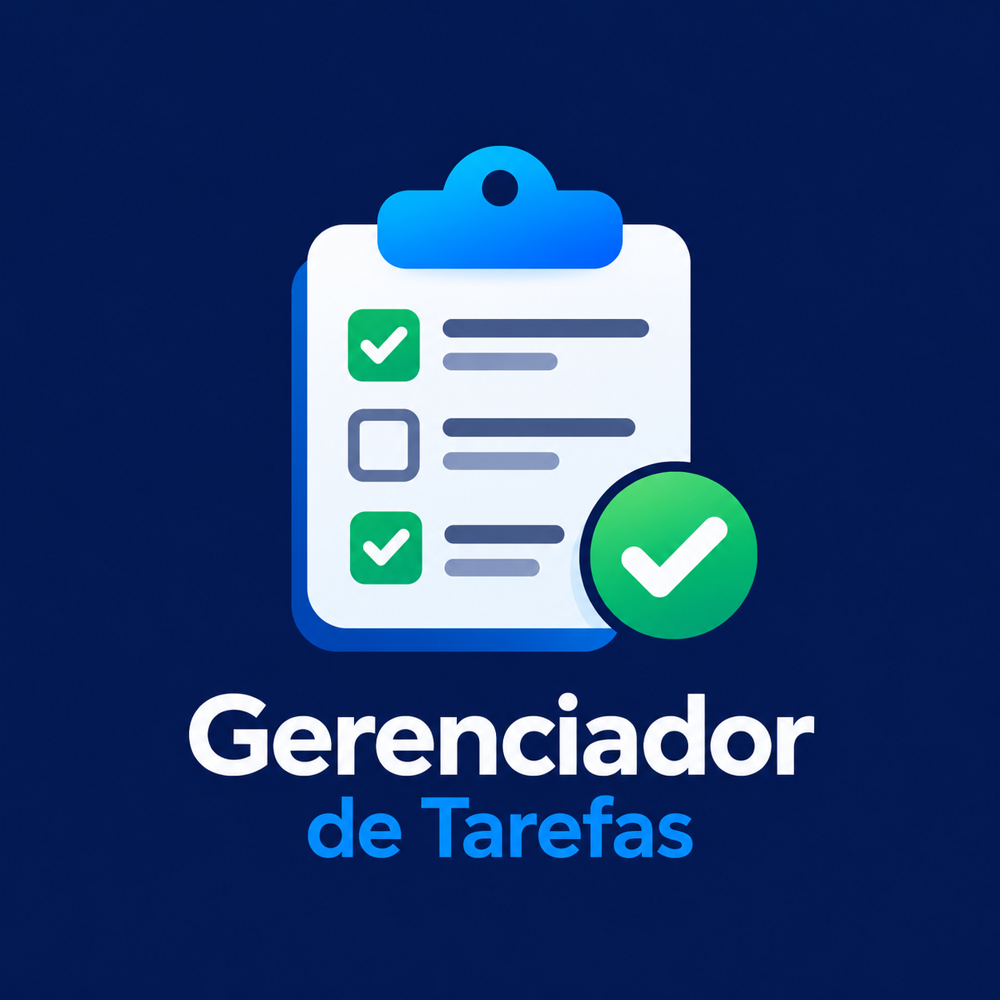

Sobre Mim
Sou formado em Sistemas de Informação e tenho conhecimentos em HTML, CSS, JavaScript e React. Estou em busca de oportunidades para desenvolver minhas habilidades e crescer profissionalmente na área de tecnologia.
Minhas habilidades
Estas são algumas das tecnologias com as quais já trabalhei:
-
HTML
Estruturação de páginas web.
-
CSS
Estilização e layout de interfaces.
-
JavaScript
Interatividade e funcionalidades para sites.
-
React
Construção de interfaces com componentes.
Meus projetos
Conheça alguns dos projetos que estou desenvolvendo para praticar e aprimorar minhas habilidades em desenvolvimento front-end.
Meu Portfólio Pessoal
Site desenvolvido para apresentar minhas habilidades, meus conhecimentos e minha evolução na área de desenvolvimento front-end.
Catálogo de Produtos
Catálogo de produtos desenvolvido com HTML, CSS e JavaScript, com pesquisa, filtros por categoria e visualização dos detalhes de cada produto.
Gerenciador de Tarefas

Aplicação desenvolvida com React, JavaScript, HTML e CSS para organizar tarefas, editar títulos, marcar tarefas como concluídas, filtrar por status e salvar os dados no navegador.
Controle Financeiro
Aplicação web de controle financeiro pessoal, desenvolvida com HTML, CSS e JavaScript, com cadastro de receitas e despesas, cálculo automático do saldo, histórico de lançamentos e filtros por tipo e período.
Entre em contato
Estou aberto a oportunidades e novos desafios na área de tecnologia. Será um prazer conversar com você!